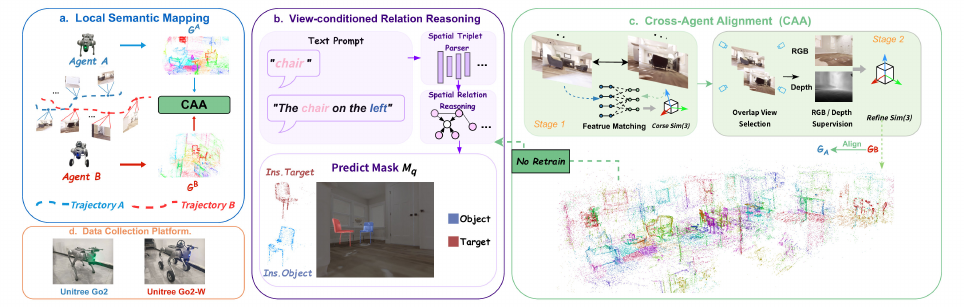
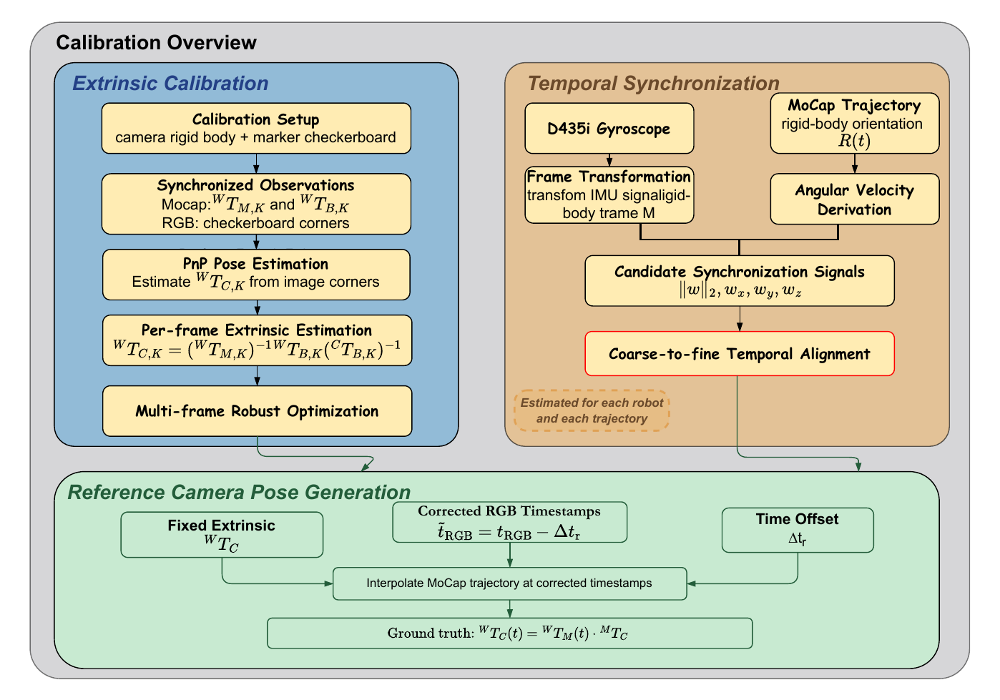
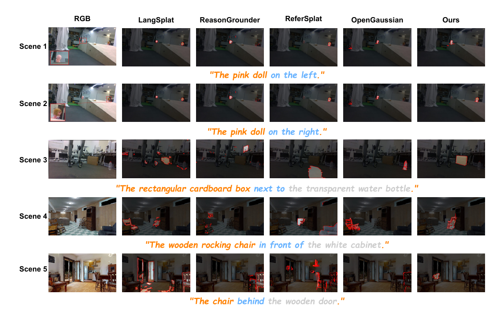

Referring queries from one viewpoint must resolve targets another agent saw. CoRef-GS constructs per-agent semantic Gaussian maps, aligns them, and grounds object- and relation-centric language over the fused result.
Single-map language grounding works, and map registration aligns geometry — but neither preserves the semantic compatibility that queries need once independently built maps fuse.
Local open-vocabulary instance-aware maps, cross-agent alignment of partial overlaps, then grounding that keeps spatial relations anchored to the querying robot's viewpoint.
CoQuad-Ref evaluations of instance-level perception over simulated multi-agent scenes with ablations on alignment compatibility and view complementarity.



Abstract
Referring scene understanding for embodied robots requires grounding object- and relation-centric language queries from a designated viewpoint. While a local semantic Gaussian map can support such grounding within one agent's observations, cooperative settings require this ability to remain effective after independently reconstructed maps are aligned and fused. In this setting, the referred target or its contextual landmark may come from another agent's observations, while spatial relations must still be interpreted from the querying robot's viewpoint. We formulate this problem as cooperative referring Gaussian grounding over fused maps, which requires geometric alignability, instance-level semantic comparability, and view-conditioned relation reasoning. Existing language-aware Gaussian methods mainly focus on single-map querying, whereas Gaussian registration methods optimize geometric or photometric alignment without preserving language-grounding-oriented semantic compatibility. We propose CoRef-GS, a cooperative referring Gaussian splatting framework. CoRef-GS constructs local open-vocabulary instance-aware Gaussian maps, then aligns partially overlapping maps with a cross-agent alignment module by geometric and semantic consistency, and grounds queries using a view-conditioned mask relation graph. We further introduce CoQuad-Ref, a dual-quadruped benchmark spanning both real-world and simulated indoor scenes. Experiments show that, on simulated scenes, CoRef-GS reduces the rotation error from 2.58° after coarse initialization to 0.15° after refinement, and improves real-world referring mIoU over ReferSplat from 52.6% to 68.8%. The established benchmark and source code will be publicly released at https://github.com/ruojiruoli17/CoRef-GS.git.